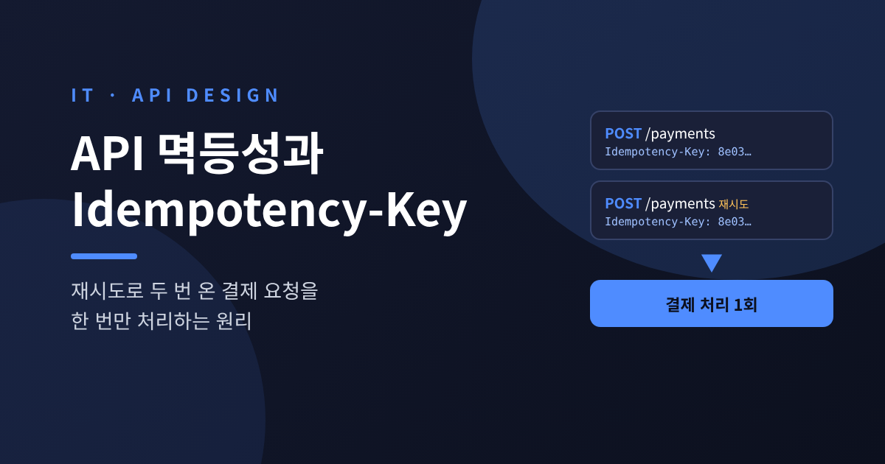
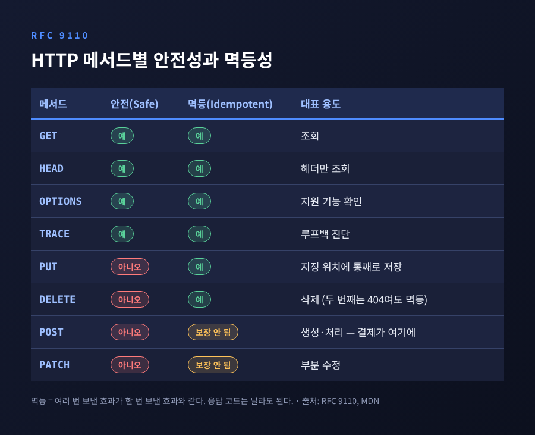
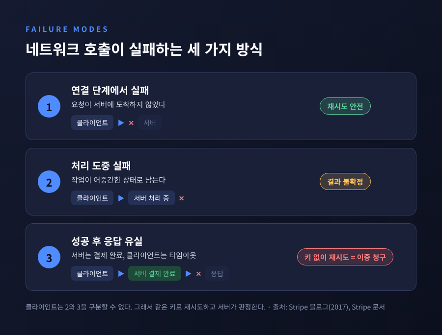
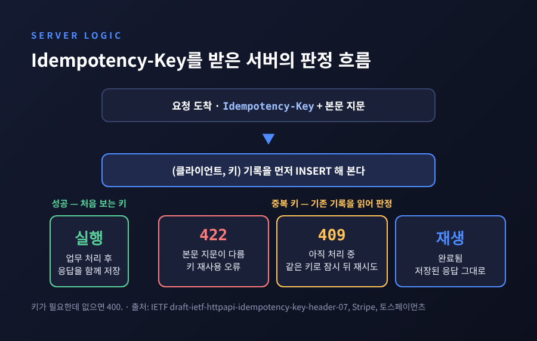
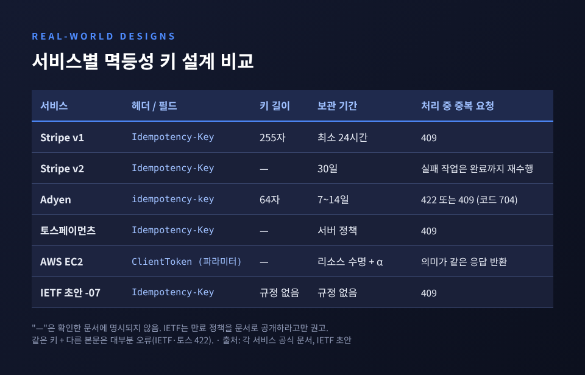
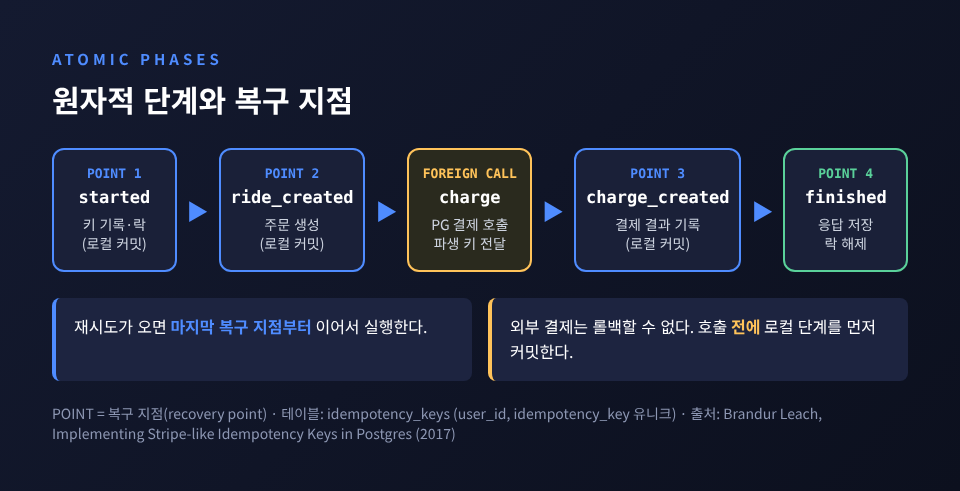
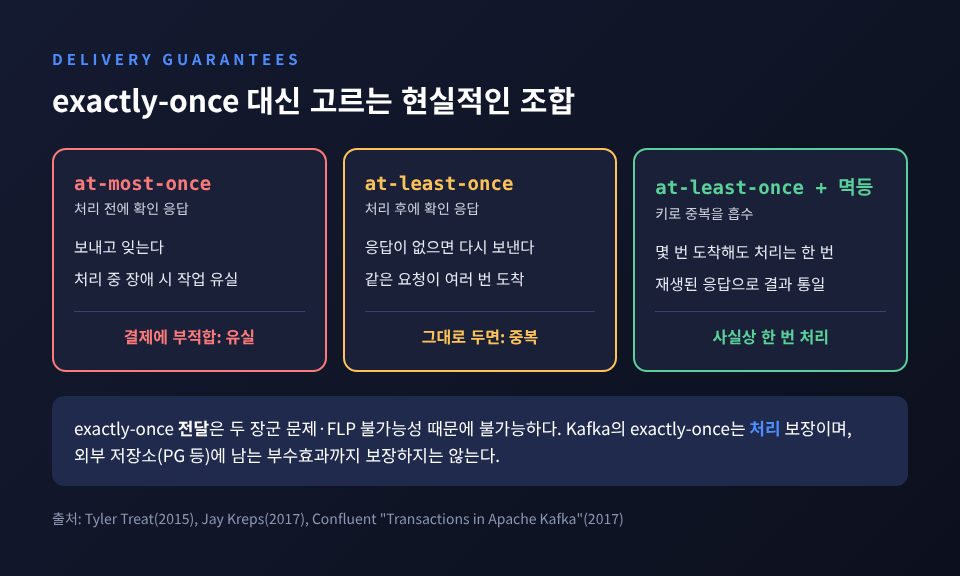

API 멱등성과 Idempotency-Key — 중복 결제를 막는 원리

이번 글에서는 API 멱등성과 Idempotency-Key를 정리해 보겠습니다. 결제 버튼을 한 번 눌렀는데 네트워크 재시도로 요청이 두 번 도착해도, 돈은 한 번만 빠져나가야 합니다. 그 약속을 지키는 장치가 무엇이고, 서버는 어떻게 구현하는지 차례로 살펴봅니다.
먼저 결론부터 적어 두겠습니다.
- POST 결제 요청은 HTTP 규격상 멱등하지 않습니다. 그래서 클라이언트가 고유한 키를 붙여 보내고, 서버가 그 키로 중복을 알아봅니다.
- 서버는 키와 요청 지문을 저장하고, 처리 중이면 409, 내용이 다르면 422, 이미 끝났으면 저장해 둔 응답을 그대로 돌려줍니다.
- 네트워크에서 '정확히 한 번 전달'은 불가능합니다. 실무의 정답은 '최소 한 번 전달 + 멱등 처리'입니다.
■ 멱등성이란 무엇인가 — RFC 9110의 정의
HTTP 의미론을 정의한 RFC 9110은 멱등성을 이렇게 설명합니다. 같은 요청을 여러 번 보냈을 때 서버에 의도된 효과가 한 번 보냈을 때와 같다면, 그 메서드는 멱등합니다.
규격상 멱등한 메서드는 GET, HEAD, OPTIONS, TRACE 같은 안전한 메서드와 PUT, DELETE입니다. POST와 PATCH는 멱등이 보장되지 않습니다. IETF의 Idempotency-Key 초안도 서론에서 이 구분을 그대로 인용합니다.
오해하기 쉬운 지점이 두 가지 있습니다.
첫째, 멱등하다고 부수효과가 전혀 없다는 뜻은 아닙니다. 서버가 요청 시각을 로그에 남기는 일은 괜찮습니다. 클라이언트가 의도한 효과가 한 번뿐이면 됩니다.
둘째, 응답까지 같을 필요는 없습니다. DELETE를 처음 호출하면 200이 오고, 두 번째부터는 404가 올 수 있습니다. 그래도 서버 상태는 '리소스 없음'으로 같으니 멱등합니다.
반대로 POST /add_row는 부를 때마다 행이 하나씩 늘어납니다.
결제 생성도 같은 구조입니다. 그대로 두면 재시도 한 번이 결제 한 건이 됩니다.

■ 재시도와 타임아웃은 왜 중복을 만드는가
Stripe의 엔지니어 Brandur Leach는 네트워크 호출이 실패하는 방식을 세 가지로 나눴습니다.
- 클라이언트가 서버에 연결하는 단계에서 실패합니다. 요청이 도착하지 않았으니 다시 보내도 대개 안전합니다.
- 서버가 처리하는 도중에 실패합니다. 작업이 어중간한 상태로 남습니다.
- 서버는 성공했는데 응답을 돌려주기 직전에 연결이 끊깁니다.
문제는 세 번째입니다. 클라이언트 입장에서 타임아웃은 '실패'처럼 보입니다. 하지만 서버에서는 이미 결제가 끝났습니다. 이때 같은 요청을 다시 보내면 이중 청구가 됩니다.
Stripe 문서는 이 상황을 분명히 경고합니다. 연결이 복구되더라도 원래 요청이 성공했는지는 알 수 없습니다. 500 응답조차 '결과 불확정'으로 다뤄야 합니다. 오류가 났어도 부수효과는 이미 생겼을 수 있기 때문입니다.
AWS도 같은 결론에 이릅니다. 재시도가 안전하려면 서버가 '이건 아까 그 요청'임을 알아볼 수 있어야 합니다. 그래서 AWS SDK와 CLI는 호출자가 ClientToken을 주지 않으면 직접 만들어 재시도마다 재사용합니다.

재시도 방식 자체도 중요합니다. Stripe는 실패 횟수 n에 대해 2^n에 비례해 기다리는 지수 백오프를 권합니다. 여기에 무작위 지연인 지터를 더해야 합니다. 많은 클라이언트가 같은 순간 실패하면 재시도 시점까지 겹쳐, 아픈 서버를 한꺼번에 두드리기 때문입니다.
■ Idempotency-Key의 기본 원리
해법은 단순합니다. 클라이언트가 작업마다 고유한 키를 만들어 요청 헤더에 담습니다. 실패하면 같은 키로 다시 보냅니다. 서버는 키를 보고, 처음 보는 작업이면 실행하고, 이미 끝난 작업이면 저장해 둔 결과를 돌려줍니다.
예전엔 "POST는 재시도하면 안 된다"가 규칙이었습니다. 지금은 "키를 붙인 POST는 같은 키로 재시도한다"가 규칙입니다.
POST /v1/payments HTTP/1.1
Idempotency-Key: "8e03978e-40d5-43e8-bc93-6894a57f9324"
Content-Type: application/json
{"orderId": "A-1029", "amount": 39000, "currency": "KRW"}
IETF는 이 관행을 표준으로 만드는 중입니다.
draft-ietf-httpapi-idempotency-key-header 07판이 2025년 10월 15일 게시됐고, 아직 RFC가 아닌 표준 트랙 초안입니다.
초안이 정한 핵심 규칙은 다음과 같습니다.
- 헤더 값은 RFC 8941 구조화 필드의 문자열입니다. UUID 같은 무작위 값을 권합니다.
- 키는 고유해야 하며, 다른 페이로드에 재사용하면 안 됩니다.
- 서버는 키와 함께 요청 본문의 지문(체크섬, 다이제스트 등)을 저장할 수 있습니다.
- 처음 온 요청은 정상 처리합니다. 완료 후 재시도에는 이전 결과를 성공·오류 구분 없이 돌려줍니다.
- 키가 필요한데 없으면 400, 같은 키에 다른 페이로드면 422, 원 요청이 아직 처리 중이면 409입니다.
- 만료 기간은 정하지 않았습니다. 대신 서버가 만료 정책을 문서로 공개하라고 권합니다.
초안에는 같은 헤더를 쓰는 구현으로 Stripe, Adyen, Dwolla, WorldPay 등이 실려 있습니다. PayPal, Square, Twilio처럼 이름만 다른 메커니즘을 쓰는 곳도 따로 정리돼 있습니다.

■ 실제 서비스들은 어떻게 설계했나
같은 아이디어라도 세부 결정은 서비스마다 다릅니다.
Stripe(API v1)는 모든 POST 요청에 Idempotency-Key를 받습니다.
키는 최대 255자이고, V4 UUID 같은 충분히 무작위한 값을 권합니다. 이메일 같은 개인정보는 키로 쓰지 말라고 적어 두었습니다.
엔드포인트 실행이 시작된 뒤의 첫 결과를 상태 코드와 본문까지 저장합니다. 500 응답도 저장 대상입니다.
반면 파라미터 검증 실패나 동시 실행 충돌처럼 실행이 시작되지 않은 경우에는 저장하지 않으니 다시 시도할 수 있습니다.
재생된 응답에는 Idempotent-Replayed: true 헤더가 붙습니다.
키는 최소 24시간 보관되고, 그 뒤 정리되면 같은 키도 새 요청으로 실행됩니다.
API v2는 방식이 다릅니다. 실패한 작업을 가능하면 끝까지 다시 수행해 갱신된 응답을 돌려주고, 창은 30일입니다.
Adyen은 키 길이를 64자로 제한하고, 키를 최초 제출 후 7~14일 동안 유효하게 둡니다. 처리 중 중복이 오면 422 또는 409와 함께 에러 코드 704를 돌려줍니다.
국내에서는 토스페이먼츠가 같은 헤더를 씁니다. 키에 API 키, URL, HTTP 메서드까지 묶어 같은 요청인지 판단합니다. 본문이 다르면 422, 이전 요청이 처리 중이면 409를 권합니다.
AWS는 접근이 조금 다릅니다. 요청 파라미터의 해시로 중복을 추정하는 방식을 명시적으로 거부했습니다. 같은 사양의 EC2 인스턴스를 의도적으로 두 번 띄우는 경우가 있기 때문입니다. 또 재시도에 'ResourceAlreadyExists' 오류를 돌려주지 않습니다. 호출자는 그 리소스를 자기 요청이 만들었는지 알 수 없기 때문입니다. 대신 첫 응답과 '의미가 같은' 응답을 돌려줍니다. 그사이 상태가 pending에서 running으로 바뀌는 정도는 허용합니다.

■ 서버 쪽 구현: 저장, 락, 응답 캐싱
서버가 지켜야 할 것은 세 가지로 압축됩니다.
- 저장 — 키, 요청 지문, 처리 상태, 최종 응답을 함께 저장합니다.
- 락 — 같은 키의 동시 요청 중 하나만 실행되게 합니다.
- 원자성 — 키 기록과 실제 변경이 함께 커밋되거나 함께 사라져야 합니다.
Brandur Leach는 이를 Postgres로 구현한 설계를 공개했습니다.
idempotency_keys 테이블에 idempotency_key, locked_at, request_params, response_code, response_body, recovery_point, user_id를 둡니다.
유니크 인덱스는 (user_id, idempotency_key)에 겁니다. 서로 다른 고객이 우연히 같은 키를 써도 충돌하지 않습니다.
처리 중에는 locked_at으로 잠그고, 그사이 들어온 같은 키 요청에는 409를 돌려줍니다.
트랜잭션은 SERIALIZABLE 격리로 실행해, 두 요청이 동시에 같은 키를 잠그려 하면 하나를 중단시킵니다.
더 눈여겨볼 부분은 외부 호출의 처리입니다.
로컬 DB 변경은 롤백할 수 있지만, 카드사나 PG에 보낸 결제는 되돌릴 수 없습니다.
그래서 작업을 '원자적 단계'로 쪼개고, 외부 변경을 시작하기 전에 로컬 단계를 먼저 커밋합니다.
각 단계가 끝날 때마다 started → ride_created → charge_created → finished 같은 복구 지점을 기록합니다.
재시도가 오면 마지막 복구 지점부터 이어서 실행합니다.
외부 결제 API를 부를 때도 파생된 멱등성 키를 함께 넘겨, 서버가 중간에 죽어도 이중 청구가 나지 않게 합니다.

AWS 역시 원자성을 강조합니다. 토큰만 기록되고 리소스는 없는 상태, 리소스만 생기고 토큰은 없는 상태 모두 허용하지 않습니다. 둘은 하나의 ACID 작업으로 묶여야 합니다.
캐시 저장소로 Redis를 쓰는 경우도 많습니다.
SET key value NX PX 30000처럼 NX(없을 때만 설정)와 PX(밀리초 만료)를 함께 쓰면 '선점 + 자동 해제'를 한 번에 표현할 수 있습니다.
다만 Redis의 키와 결제 DB의 커밋은 하나의 트랜잭션이 아닙니다.
최종 판정의 근거는 결제 데이터와 같은 DB에 두는 편이 안전하다고 생각합니다.
■ 동시 요청은 어떻게 처리하나
가장 까다로운 순간은 첫 요청이 아직 처리 중일 때 재시도가 도착하는 경우입니다. 조회 후 삽입(check-then-insert) 방식은 여기서 무너집니다. 두 요청이 동시에 '키 없음'을 확인하고 둘 다 실행해 버리기 때문입니다.
해법은 '먼저 삽입하고, 실패하면 조회'입니다. DB의 유니크 제약이 단 하나의 승자를 정해 줍니다. 진 쪽은 기록을 읽어 상태를 판단합니다.
- 지문이 다르면 422 — 키를 다른 작업에 재사용한 클라이언트 버그입니다.
- 아직 처리 중이면 409 — 잠시 뒤 같은 키로 다시 오라고 알려 줍니다.
- 완료됐으면 저장된 상태 코드와 본문을 그대로 돌려줍니다.
Stripe는 409를 받은 클라이언트에게 기다렸다가 같은 키로 재시도하라고 안내합니다. 새 키를 만들면 두 번째 결제가 시작될 수 있기 때문입니다.
처리 중 서버가 죽으면 락이 영원히 남을 수도 있습니다. 그래서 락에는 만료 시각을 두고, 만료된 락은 다음 요청이 이어받게 합니다. Brandur의 설계에서는 'completer' 프로세스가 버려진 요청을 찾아 끝까지 마무리합니다.
■ 키는 얼마나 오래 보관해야 하나
정답 숫자는 없습니다. Stripe v1은 최소 24시간, v2는 30일, Adyen은 7~14일입니다. EC2는 '리소스 수명에 일정 기간을 더한 만큼'입니다. IETF 초안은 기간을 정하지 않고, 정책을 문서로 공개하라고만 합니다.
기준은 '가장 늦게 올 수 있는 재시도'입니다. 클라이언트 재시도 루프, 오프라인 제출, 메시지 큐 재전달, 실패 메시지 재처리, 수동 복구까지 따져 봐야 합니다. OneUptime의 2026년 글은 이 지연들을 '더해서' 계산하고 여유를 얹으라고 권합니다. 요청이 올 때마다 만료를 연장하는 슬라이딩 방식보다, 완료 시각 기준의 고정 만료를 권합니다.
함께 기억할 점이 있습니다. 내 서버의 보관 기간이 길어도, 외부 PG의 중복 제거 창까지 늘어나지는 않습니다. Stripe도 24시간이 지나도록 결과를 모르면 재시도하지 말고, 객체 조회와 웹훅으로 대사하라고 안내합니다. 키 만료 이후의 안전망은 결국 주문 번호 같은 업무 키와 대사 작업입니다.
Brandur는 키 재활용은 약 24시간, 미완료 요청 정리 기준은 약 72시간을 제시했습니다. 주말에 생긴 버그를 월요일에 고치고, 실패한 요청을 마저 완료할 수 있게 하려는 계산입니다.
■ Spring으로 구현해 보기
아래는 위 원칙을 Spring Boot와 PostgreSQL로 옮긴 최소 예시입니다. 실서비스에서는 인증, 지표, 예외 분류를 더 세밀하게 다듬어야 합니다.
테이블은 클라이언트와 키를 묶어 기본 키로 둡니다.
CREATE TABLE idempotency_record (
client_id VARCHAR(64) NOT NULL,
idem_key VARCHAR(255) NOT NULL,
request_hash CHAR(64) NOT NULL, -- 요청 본문 SHA-256 지문
status VARCHAR(16) NOT NULL, -- IN_PROGRESS / COMPLETED
response_code INT,
response_body TEXT,
locked_until TIMESTAMPTZ NOT NULL, -- 처리 중 락의 만료 시각
expires_at TIMESTAMPTZ NOT NULL, -- 키 보관 만료 시각
PRIMARY KEY (client_id, idem_key)
);
핵심은 '삽입으로 선점'하는 서비스입니다.
@Service
@RequiredArgsConstructor
public class IdempotencyService {
private final JdbcTemplate jdbc;
public Claim claim(String clientId, String key, String hash) {
try {
jdbc.update("""
INSERT INTO idempotency_record
(client_id, idem_key, request_hash, status, locked_until, expires_at)
VALUES (?, ?, ?, 'IN_PROGRESS',
now() + interval '30 seconds', now() + interval '24 hours')
""", clientId, key, hash);
return Claim.acquired(); // 이 요청이 승자
} catch (DuplicateKeyException e) {
IdemRecord r = find(clientId, key);
if (!r.requestHash().equals(hash)) return Claim.mismatch(); // 422
if (r.isCompleted()) return Claim.replay(r); // 저장된 응답 재생
if (r.lockExpired() && takeOver(clientId, key)) return Claim.acquired();
return Claim.inProgress(); // 409
}
}
// 업무 변경과 같은 트랜잭션 안에서 호출한다
public void complete(String clientId, String key, int code, String body) {
jdbc.update("""
UPDATE idempotency_record
SET status = 'COMPLETED', response_code = ?, response_body = ?
WHERE client_id = ? AND idem_key = ?
""", code, body, clientId, key);
}
private boolean takeOver(String clientId, String key) {
return jdbc.update("""
UPDATE idempotency_record
SET locked_until = now() + interval '30 seconds'
WHERE client_id = ? AND idem_key = ?
AND status = 'IN_PROGRESS' AND locked_until < now()
""", clientId, key) == 1; // 한 요청만 갱신에 성공
}
// find(...) 생략
}
컨트롤러는 판정 결과에 따라 응답만 고릅니다.
@PostMapping("/payments")
public ResponseEntity<String> pay(@RequestHeader("Idempotency-Key") String key,
@RequestBody PaymentRequest req,
Principal user) {
String clientId = user.getName();
String hash = Hashing.sha256(canonicalJson(req)); // 필드 순서를 정규화한 뒤 해시
Claim c = idempotency.claim(clientId, key, hash);
return switch (c.type()) {
case MISMATCH -> ResponseEntity.unprocessableEntity().build();
case IN_PROGRESS -> ResponseEntity.status(409).header("Retry-After", "1").build();
case REPLAY -> ResponseEntity.status(c.code())
.header("Idempotent-Replayed", "true")
.body(c.body());
case ACQUIRED -> paymentFacade.payOnce(clientId, key, req); // PG 호출 시 파생 키 전달
};
}
몇 가지를 덧붙입니다.
@RequestHeader가 필수이므로 키가 없으면 Spring이 400을 돌려줍니다. 초안의 규칙과 맞아떨어집니다.payOnce안에서 주문 상태 변경과complete()를 하나의@Transactional로 묶습니다. AWS가 말한 '토큰과 변경의 원자성'입니다.- PG 호출은 롤백이 불가능한 외부 변경입니다. 호출 전에 로컬 상태를 먼저 커밋하고, PG에도
clientId + key에서 파생한 키를 넘깁니다. - 입력 검증 실패처럼 실행 전에 끝난 요청은 기록을 지워 다시 시도할 수 있게 합니다. Stripe가 실행 시작 전 오류를 저장하지 않는 것과 같은 판단입니다.
- 만료된 기록은
expires_at기준 배치로 정리합니다.
■ exactly-once라는 환상, 그리고 현실적인 조합
"메시지를 정확히 한 번만 전달하면 되지 않느냐"는 질문이 늘 따라옵니다.
Tyler Treat는 2015년 글에서 분산 환경의 exactly-once '전달'은 불가능하다고 정리했습니다. 근거는 두 장군 문제와 FLP 불가능성 결과입니다. 보낸 쪽은 메시지가 사라졌는지, 확인 응답이 사라졌는지, 상대가 그저 느린지 구분할 수 없습니다.
선택지는 두 가지뿐입니다. 처리 전에 확인 응답을 보내면 최대 한 번(at-most-once)이 되어 유실이 생깁니다. 처리 후에 보내면 최소 한 번(at-least-once)이 되어 중복이 생깁니다. 결제에서 유실은 받아들일 수 없으니, 중복을 감수하고 멱등성으로 흡수하는 쪽을 택합니다.
Kafka가 말하는 exactly-once도 결이 같습니다.
공동 창시자 Jay Kreps는 이것이 '전달'이 아니라 '처리'에 대한 보장이며, 마법이 아니라고 강조했습니다.
Confluent의 설명에 따르면 트랜잭션은 '읽기-처리-쓰기' 순환을 원자적으로 만들고, transactional.id와 에포크로 좀비 프로듀서를 차단합니다.
그러나 처리 과정이 다른 저장소에 부수효과를 남긴다면 이 API만으로는 exactly-once를 보장할 수 없다고 직접 밝힙니다.
PG 결제가 바로 그런 '다른 저장소'입니다.

정리하면 이렇습니다.
멱등성 키는 네트워크를 고치는 기술이 아닙니다. 네트워크가 반드시 실패한다는 사실을 받아들이고, 그 실패를 안전하게 반복할 수 있게 만드는 계약입니다. 그 계약에는 키 형식, 보관 기간, 409와 422의 의미, 그리고 기간이 끝난 뒤의 대사 절차까지 포함됩니다. 완벽하지는 않습니다. 키가 만료된 뒤의 재시도나 외부 PG의 창 밖에서 일어난 일은 결국 사람이 확인해야 합니다.
"한 번만 보내는 것이 아니라, 몇 번을 받아도 한 번만 처리하는 것."
결제 API를 새로 설계하신다면, 엔드포인트보다 이 계약을 먼저 문서로 적어 보시길 권합니다. 중복 결제 장애를 막을 방법을 하나만 고르라고 하신다면, 저는 주저 없이 이 계약을 고르겠습니다.
#API멱등성 #IdempotencyKey #멱등성키 #중복결제방지 #결제API #RFC9110 #SpringBoot #분산시스템 #exactlyonce